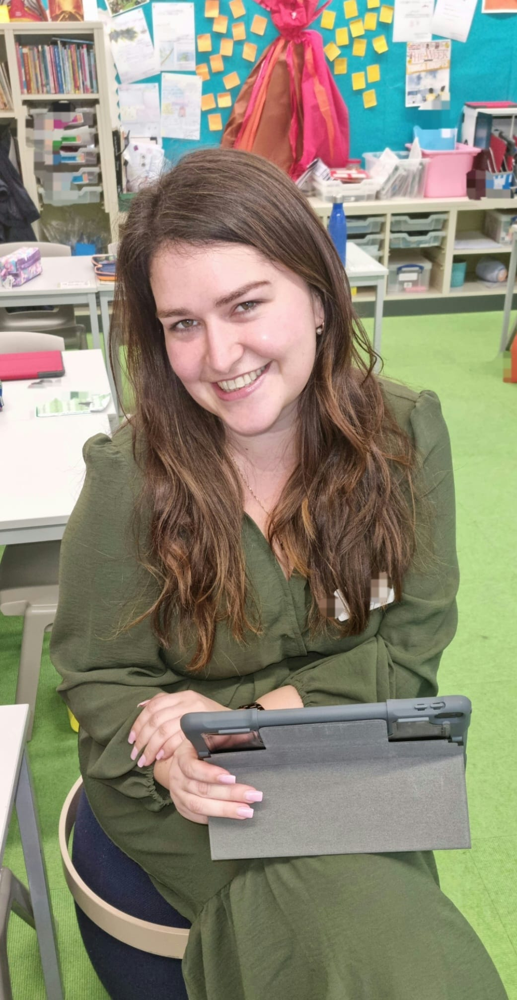

Welcome to Love Learning with Louise
Where every child's potential is fostered for success. Louise is a leading educator with over 15 years of experience in and out of the classroom. She is a renowned inquiry educator and trainer and has earned the reputation for delivering learning with the best combination of kindness and rigour to ensure her students make the most progress possible.
Meet Louise
Louise is the Developer and Owner, She Doesn't mess about.
Our Programs
We offer a variety of programs tailored to meet the needs of different age groups and learning styles. From early childhood education to advanced academic tutoring, we have something for everyone.
Testimonials
Testimonial 1: wholeheartedly recommend Louise as a tutor. She tutored my daughter during her primary years, and after trying several tutors since then, it’s clear that Louise was the best.
Louise effortlessly connected with my very shy daughter, making learning not only enjoyable but also tailored to her individual interests.
Louise‘ empathy and kindness left a lasting impression. She truly has a gift for inspiring young learners!'
Louise has been an exception tutor for our child and has really helped her to build confidence in Maths. We really like her fun play-based learning approach that holds the attention and focus on an 8 year old for an hour.'.
Louise has known my daughter for three years and has been working with her for 11+ exam prep for two. She she is the ideal combination of nurturing and challenging at the same time.
Louise knows exactly how to motivate children and pushes them to reach their fullest potential. Louise is very professional, always on time and always prepared; she is always eager to do her work and takes it very seriously. I cannot recommend Louise highly enough.
Miss Ryan has been my teacher and tutor for three years. She encourages me to get our of my comfort zone and does not hold me back. For example, a few months ago Miss Ryan challenged me to enter the BBC 500 Words competition and I made it through to the second round, whereas if I did not have her, I probably would not have even tried and I would have lost an opportunity.
Miss Ryan is a wonderful tutor, making the sessions engaging and fun whilst still providing education to a high degree. She is extremely competent across a range of ages.
miss Ryan has great energy and always manages to have productive and effective sessions. We highly recommend her!.